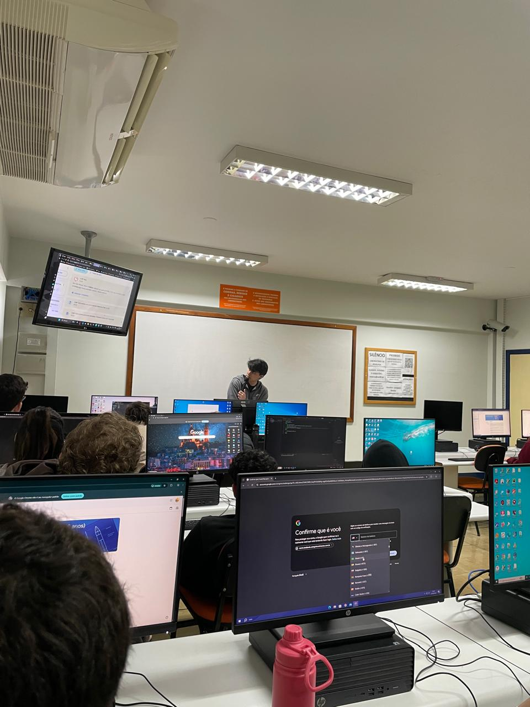

Relatório – 16ª Aula
Data: 22/06/2026
Turma: 8º e 9º ano
Instrutor:Kawan
Relatório – atividade css
Na aula de hoje, o instrutor Kawan propôs um desafio prático de CSS, no qual os alunos deveriam estilizar as tags "h1" ou "p" modificando a fonte, o alinhamento centralizado, a cor do texto e o fundo da página. Durante toda a atividade, atuei no suporte individual da turma, esclarecendo dúvidas e corrigindo os códigos em um ambiente bastante tranquilo e produtivo. Para encerrar a sessão de forma dinâmica, realizamos um quiz interativo no Kahoot com perguntas básicas sobre os conceitos de estilização estudados, consolidando o aprendizado do dia.
